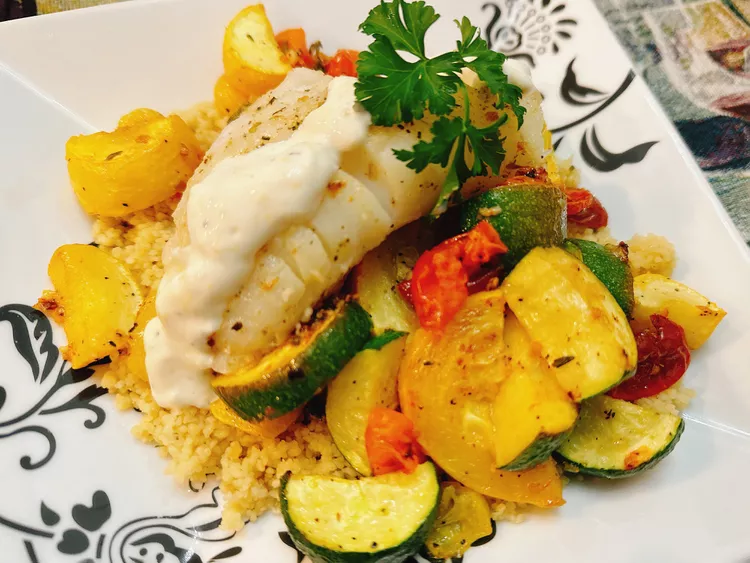

Pan-Seared Code with Lemon Aioli

Description
This lovely pan-seared cod with an easy, homemade lemon aioli cooks exceptionally fast. Pair with oven roasted vegetables and couscous for a fast, but filling weeknight meal.
Ingredients
2 tablespoons mayonnaise
1/2 teaspoon lemon zest
4 (6 ounce) cod filets
1 tablespoon olive oil
1 teaspoon Italian seasoning
Steps
- For lemon aioli: Stir mayonnaise, lemon zest, lemon juice, and grated garlic together in a small bowl. Season to taste with salt and pepper. Thin to a drizzling consistency with milk.
- For fish: Pat fish dry with a paper towel. Heat olive oil and butter in a skillet over medium-high heat. Sprinkle both sides of cod with Italian seasoning, salt, and pepper.